Bills due
Upcoming bill, EMI and credit card dues, read from the reminder texts your bank and biller already send.
What bills are due this week?
Give Hermes the senses of your own Android phone. It reads, tracks and warns — and asks before it sends anything.
Real Hermes Agent sessions on a moto g34. Waiting time is sped up and marked. Numbers, amounts and names are blurred. Bills and subscriptions ran on the demo phone.
Every clip is a real Hermes Agent session with the plugin. Real phone clips ran on a moto g34 over Termux:API. Demo phone clips use the built-in mock helper, so nobody's private messages end up on this page.
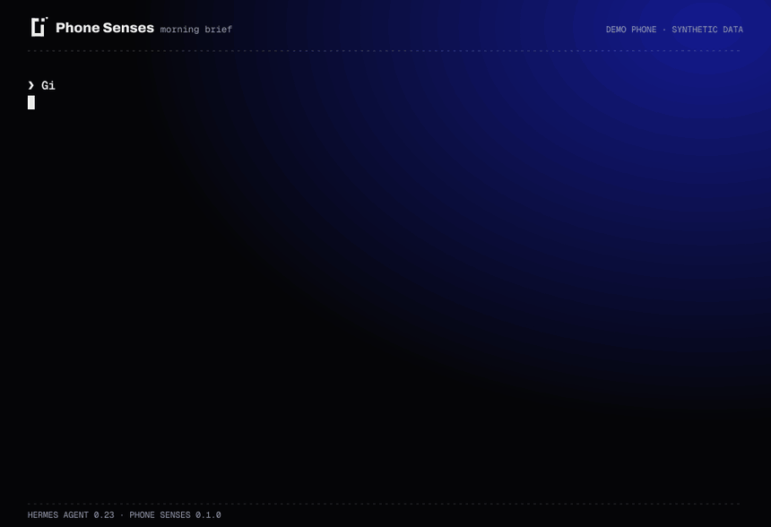
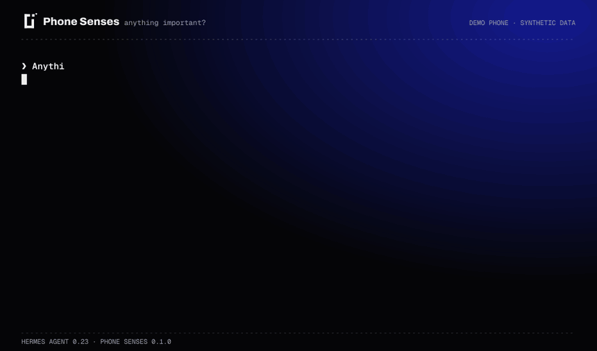
Phone Senses reads notifications, missed calls and SMS straight from Android, filters out system noise and media players, and hides one-time codes before Hermes ever sees them.
Try asking
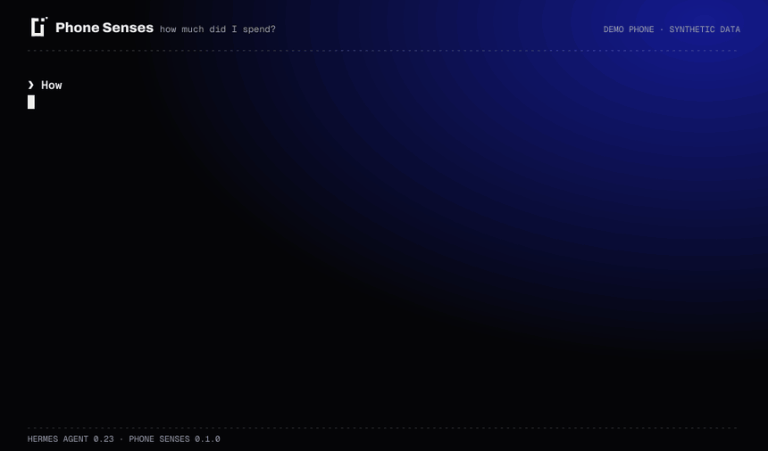
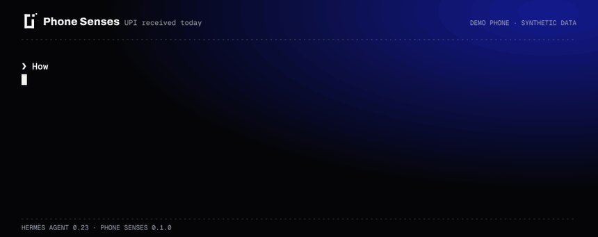
Every bank debit and UPI payment already arrives as an SMS. Phone Senses turns them into amounts, merchants and categories, stores only those numbers, and answers questions about your spending and income. Shopkeepers can ask how much came in by UPI today.
Try asking
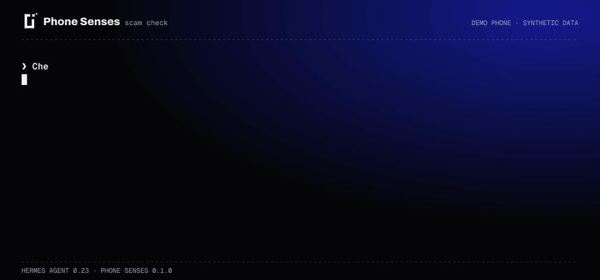
Fake KYC warnings, electricity disconnection threats, lottery prizes, parcel fees and refund apps are scored with clear reasons, so Hermes can tell you why a message looks wrong.
Try asking
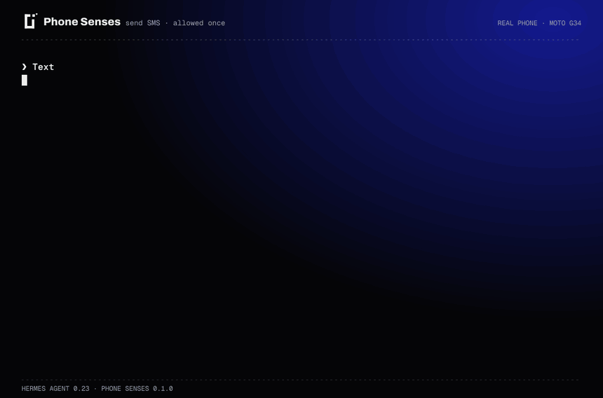
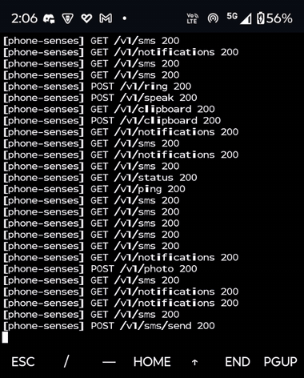
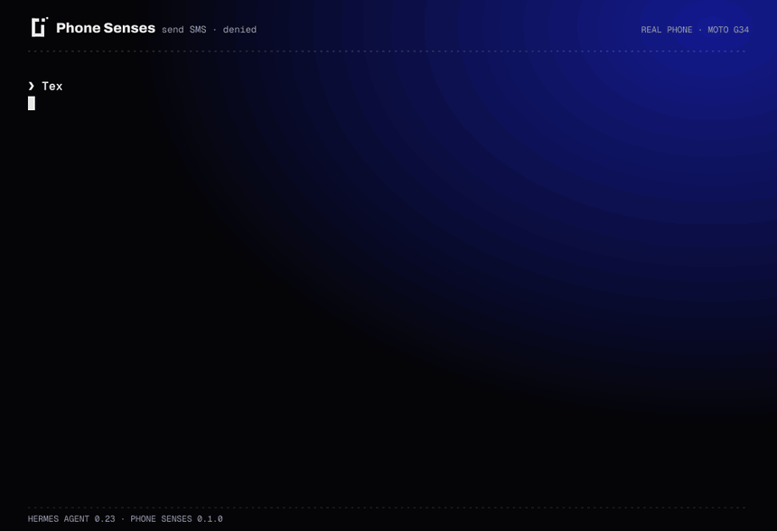
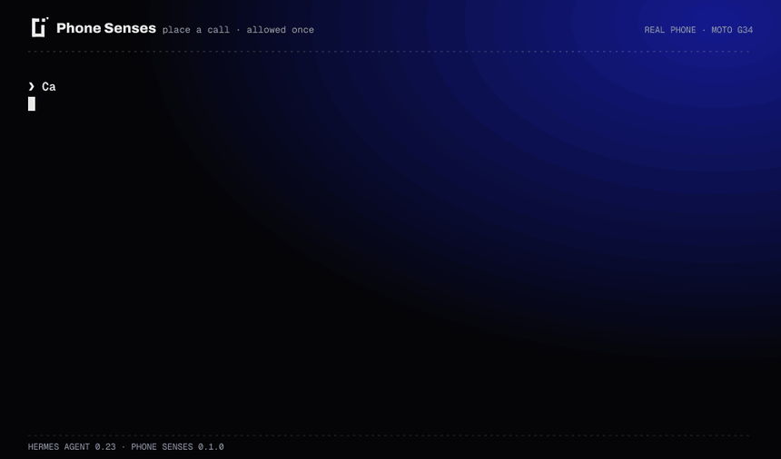
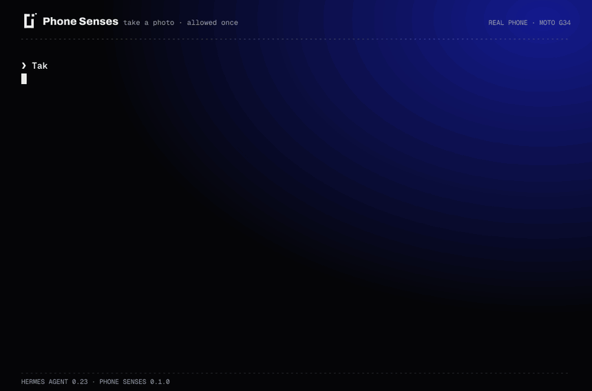
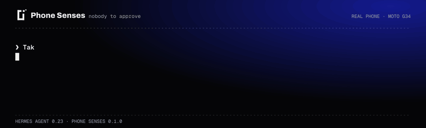
Sending an SMS, placing a call, taking a photo and revealing a code always open Hermes's own approval panel with the exact number and text. Deny it and nothing leaves your phone. With nobody there to answer, the action is refused.
Try asking
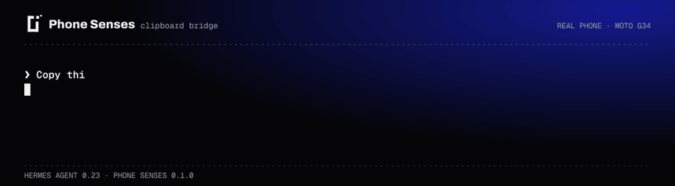
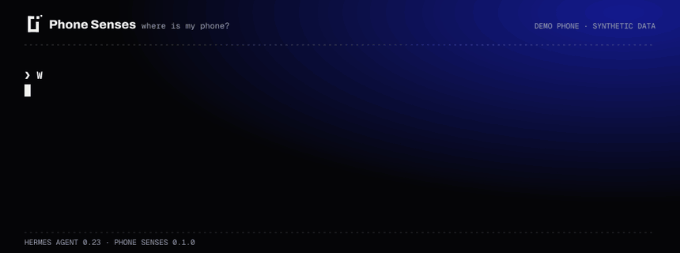
Lost the phone under a cushion? It rings at full volume, speaks, vibrates and flashes the torch, then puts your volume back. It can also read text aloud, pass links between laptop and phone, and say where the phone is.
Try asking
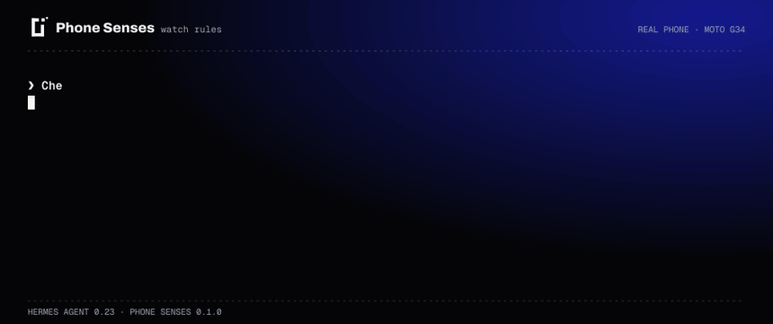
Set rules like “tell me when a notification says delivered” or “warn me about debits over 1,000 rupees”. Run the check from a Hermes cron job and matches reach your chat or Telegram, each one only once.
Try asking
They read the same SMS and notifications, keep only what they need, and bring the plugin to 25 tools.
Upcoming bill, EMI and credit card dues, read from the reminder texts your bank and biller already send.
What bills are due this week?
Order and courier status from Amazon, Flipkart, Swiggy and courier messages, in one list.
Where are my deliveries?
Recurring debits grouped by merchant, with what they add up to each month.
What am I paying for every month?
An alert in your chat when the phone drops below a battery level you pick.
Tell me when my phone drops below 20%.
Screen-driving agents take a screenshot for every step. Phone Senses calls Android's own APIs through Termux:API, so “read my latest SMS” is one request.
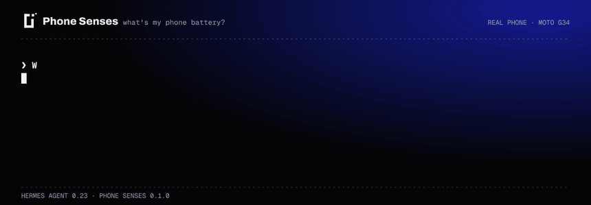
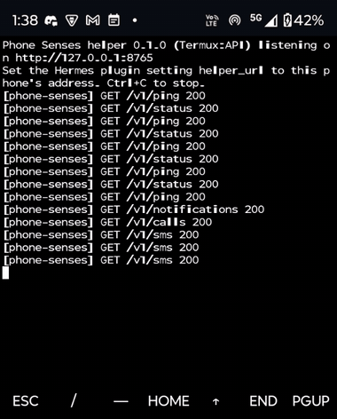
HMAC-SHA256 · timestamp · nonce
On your laptop, in chat, Telegram or a cron job. Hermes picks the Phone Senses tool for the job.
“what's my phone battery?”Sending an SMS, calling, taking a photo or revealing a code stops at Hermes's approval panel first, through a pre_tool_call hook. One-time codes are masked before Hermes sees any text.
pre_tool_call › approval panel · OTP › [OTP hidden]Plain HTTP over Wi-Fi, Tailscale or USB. Every request carries an HMAC-SHA256 signature, a timestamp and a one-time nonce. The pairing secret itself never travels.
GET /v1/status · HMAC-SHA256 · ts · nonceA small standard-library Python server on the phone. Each endpoint runs one fixed termux command with validated input, and there is no shell. Start it with --mock to try everything on a laptop.
[phone-senses] GET /v1/status 200Termux:API reads SMS, notifications, the call log, battery and location, and drives the camera and SIM. Texts go out from your own number.
termux-battery-status · termux-sms-listResearchers compared agents that drive Android from the command line with agents that read screenshots and tap. On everyday data tasks the command line finished far more of them, in fewer steps.
Task success, 45 everyday tasks
Average steps per task, fewer is better
Gu et al., 2026. “Beyond the GUI Paradigm: Do Mobile Agents Need the Phone Screen?” CLI-Advantage suite: coding agents driving Android over ADB vs screen-based agents. A study of the approach, not of Phone Senses. arXiv 2606.19388
Phone Senses only ever talks to the helper on your own phone. There is no telemetry and no third-party service.
SMS, calls, photos and OTP reveal go through Hermes's approval panel with the exact content shown.
OTPs appear as [OTP hidden] in every result unless you turn reveal on and approve each request.
The money tracker keeps amounts, dates and merchants. Never the SMS itself.
Every request carries an HMAC signature, a timestamp and a one-time nonce. The secret is never sent.
Each endpoint runs one fixed termux command with validated input. Free text travels on stdin.
The helper runs visibly in Termux with a persistent notification. Stop it any time with Ctrl+C.
You need Hermes Agent 0.23 or newer and an Android phone with Termux and Termux:API from F-Droid.
Install F-Droid, then Termux and Termux:API from F-Droid. Grant Termux:API the SMS, call log, contacts, location and camera permissions, and turn on its notification access.
In Termux, clone the repo, create your pairing code, and start the helper.
pkg install -y python termux-api git
git clone https://github.com/LSUDOKO/Phone-Senses.git && cd Phone-Senses
python phone_helper/helper.py --pair # prints your pairing code once
termux-wake-lock && python phone_helper/helper.py --host 0.0.0.0Install it, then set the helper address and pairing code in Settings › Plugins › Phone Senses.
hermes plugins install https://github.com/LSUDOKO/Phone-Senses/tree/main/plugin --enableTry /phone, or ask “what's my phone battery?”.
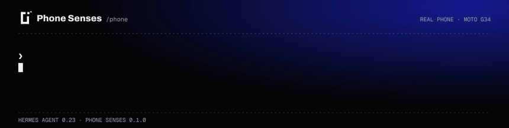